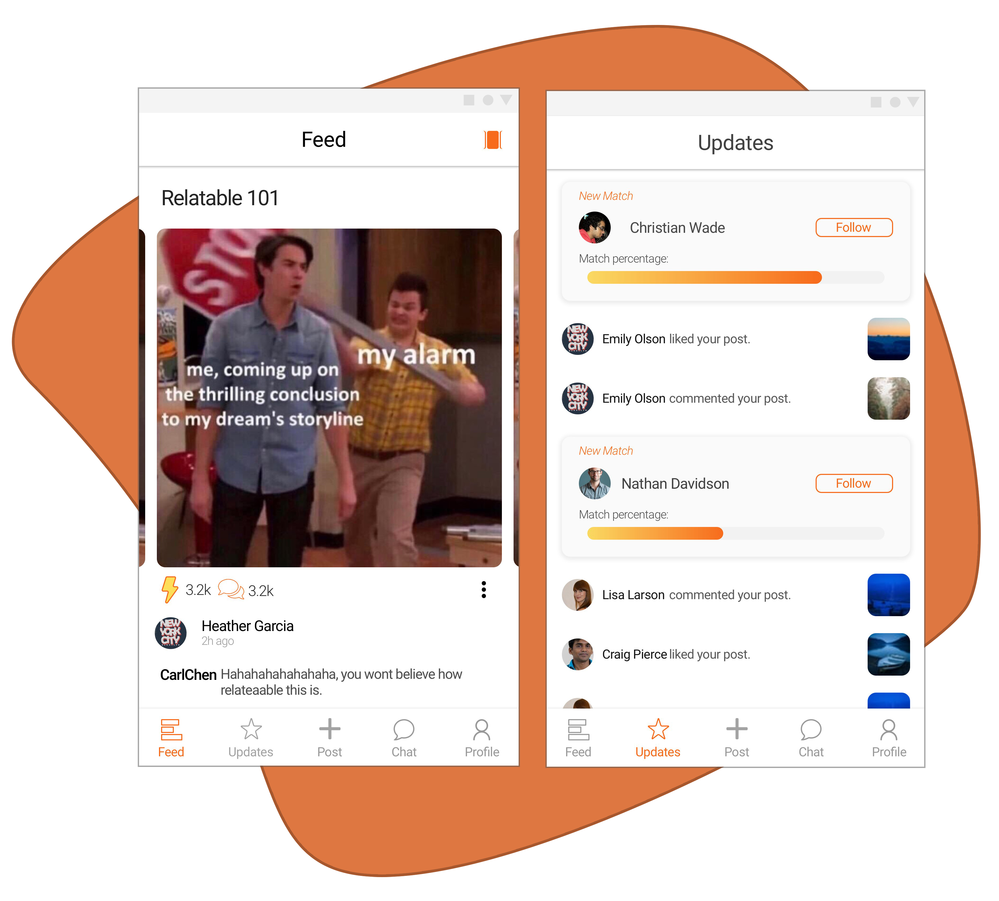

BrailleIO
A braille printer that costs less than $5

Idea
Old computing technology with disk support such as CD/DVD drives, playstations usually have a working disk ejector. This ejector contains a servo motor which can be used to make something cool like a Braille Printer.
Role I conducted interviews and contextual inquiry with visually impaired kids to identify potential usability issues with existing braille printers - identified 3 key issues related to accessibility. I was responsible for making a 3-axis CNC using old CD/DVD drives - we got the drives from a old computer market for free. I separated the servo motors and connected them to an arduino (H-Bridge) to print via an app on their phone (Bluetooth).
Team Aman Agarwal, Amit Jaggi, Varnit Jain, Shubham Kumar Timeline Jan 2016 - May 2016 Award Won the prize for the best project out of about 48 teams and git selected for demonstration in the Maker Faire ‘16
Role I conducted interviews and contextual inquiry with visually impaired kids to identify potential usability issues with existing braille printers - identified 3 key issues related to accessibility. I was responsible for making a 3-axis CNC using old CD/DVD drives - we got the drives from a old computer market for free. I separated the servo motors and connected them to an arduino (H-Bridge) to print via an app on their phone (Bluetooth).
Team Aman Agarwal, Amit Jaggi, Varnit Jain, Shubham Kumar Timeline Jan 2016 - May 2016 Award Won the prize for the best project out of about 48 teams and git selected for demonstration in the Maker Faire ‘16